2.6 Assessing and Modeling Complex Nonlinearities for Independent Variables
Thus far, we have only covered the relatively simple case of adding a squared term for a continuous IV. However, there are many other ways to assess and model nonlinearities in regression models
Note it is not always best to use the most complicated solution
Indeed, some of these more flexible methods are helpful for assessing when you are OK using the simpler solution
However, it is generally impossible to know whether the simpler solution is OK unless you have also tried the more complicated solution
A footnote stating “I tried it the more sophisticated way and found basically the same exact result as the easier way” can be very reassuring to reviewers; in that case, present the easier way in the main text
All else equal, simplicity is a virtue. However, simplicity is not a valid justification for inaccurately modeling your data*
*E.g., Would you be comfortable writing a paper with the occupational prestige, gender, and age data above that did not include age2? That did not include interactions between age and gender?
Scatterplots
For bivariate relationships, scatterplots can be helpful
(Long's data on academic jobs of biochemists \ 2009-03-13)
sort phdtwowayscatter job phd, jitter(3) ///title("[2.6.a] Job Prestige and Prestige of PhD Program")
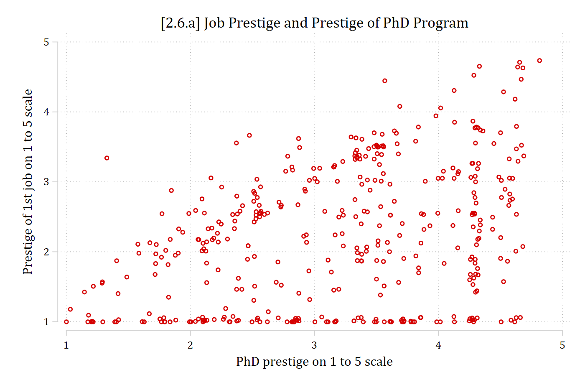
library(haven) # import Stata data and labelslibrary(dplyr) # data manipulationlibrary(sjmisc) # frequency tableslibrary(ggplot2) # graphslibrary(marginaleffects) # predictions and marginal effectslibrary(lme4) # random effects modelslibrary(cleanplots) # graph schemecleanplots_defaults()regjob <-read_dta("https://tdmize.github.io/data/data/regjob3.dta")ggplot(regjob, aes(x = phd, y = job)) +geom_jitter() +labs(title ="[2.6.a] Job Prestige and Prestige of PhD Program")
twowayscatter job phd if fem == 0, jitter(3) || ///scatter job phd if fem == 1, jitter(3) || , ///title("[2.6.b] Job Prestige and Prestige of PhD Program") ///legend(order(1 "Men" 2 "Women"))
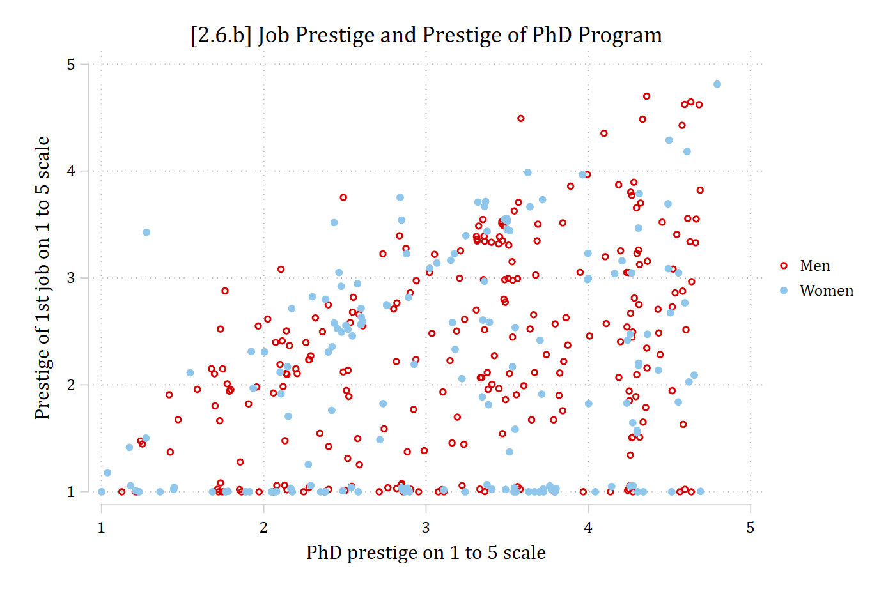
ggplot(regjob, aes(x = phd, y = job, color =factor(fem, labels =c("Men", "Women")))) +geom_jitter() +labs(title ="[2.6.b] Job Prestige and Prestige of PhD Program", color =NULL)
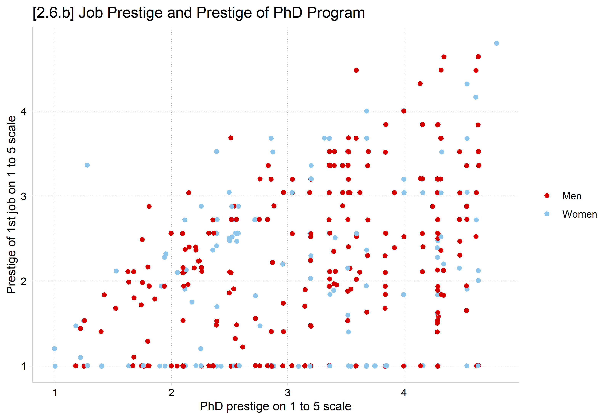
LOWESS: locally weighted scatterplot smoothing
Lowess performs “local” regressions sequentially across subsets of your data, showing how one continuous IV relates to a DV across the range of your data
This is primarily an exploratory technique—you can plot the smoothed regression line but you do not get parameter estimates or tests of statistical significance
It can be a helpful way to quickly assess nonlinearity and often suggests possible parametric modeling solutions for the nonlinearity (e.g., need both age and age2 in model)
Since a lowess plot is non-parametric it does not constrain the shape of the relationship between an IV and the DV in any way
A bandwidth can be specified to determine just how local you want the lowess to calculate the regression estimate
A bandwidth of 0.4 means you want the 40% of the data closest to a given point used to calculate the regression line for that point (data points closer to the middle of the bandwidth are given more weight)
Smaller bandwidths will let you find more nonlinearities but are more susceptible to outliers and other quirks of your data
(cda_gss.dta | GSS 1972-2021 CDA - Categorical Data Analysis | date created 202
> 3)
replace freespchSS = freespchSS * 100
(37,790 real changes made)
hist freespchSS, percent///title("[2.6.g] Distribution of support for free speech scale") ///subtitle("0% = restrict free speech in all cases; 100% = support free speech in all cases")
(bin=46, start=0, width=2.173913)
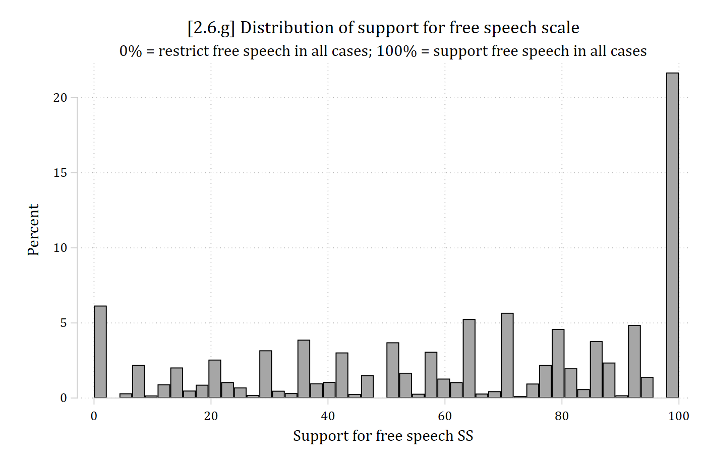
gss <-read_dta("https://tdmize.github.io/data/data/cda_gss.dta")# Keep only the variables used and drop any missing data on themgss <- gss[c("freespchSS", "edyrs")]gss <- gss[complete.cases(gss), ]gss <- gss |>mutate(freespchSS = freespchSS *100)ggplot(gss, aes(freespchSS)) +geom_histogram(fill =NA, color ="black") +labs(title ="[2.6.g] Distribution of support for free speech scale",subtitle ="0% = restrict free speech in all cases; 100% = support free speech in all cases",x ="Support for free speech")
lowess freespchSS edyrs, bwidth(.4) jitter(3) xlab(0(2)20) gen(lowpr) ///title("[2.6.h] Relationship between support for free speech and education") ///subtitle("With lowess smoothed trend line") ytitle("Support for free speech")
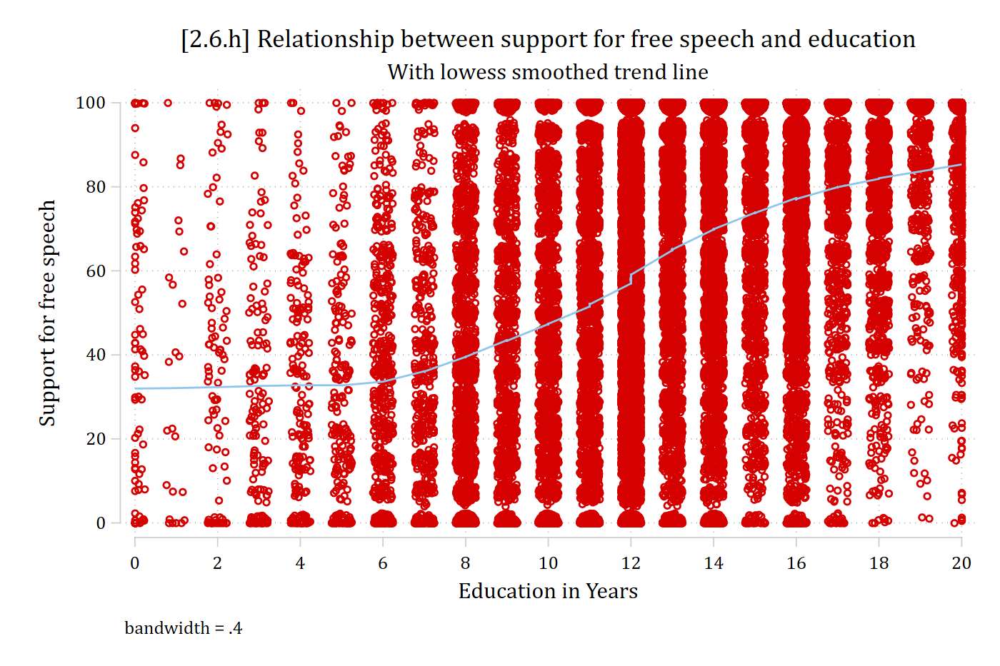
ggplot(gss, aes(x = edyrs, y = freespchSS)) +geom_jitter(alpha = .1) +geom_smooth(method ="loess", span =0.4, se =FALSE) +scale_x_continuous(breaks =seq(0, 20, 2)) +labs(title ="[2.6.h] Relationship between support for free speech and education",subtitle ="With lowess smoothed trend line",x ="Years of education", y ="Support for free speech")
marginsplot, plotop(msymbol(none)) recastci(rline) ciopt(lpat(dash) lcol(*.4))/// ylab(0(10)100) ytitle("free speech support") ///title("[2.6.i] Predicted support for free speech by education in years") ///addplot(connected lowpr edyrs, sortmsymbol(none) lcol(eltblue)) ///legend(order(2 "edyrs^3" 3 "lowess"))
Variables that uniquely identify margins: edyrs
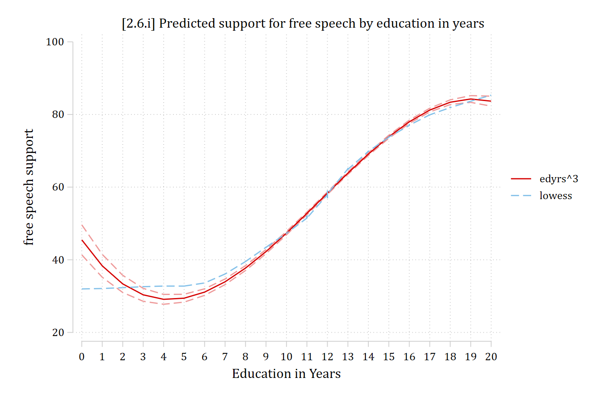
plot_predictions(freemod, by ="edyrs",newdata =datagrid(edyrs =0:20, grid_type ="counterfactual")) +geom_smooth(data = gss, aes(x = edyrs, y = freespchSS), method ="loess", span =0.4,se =FALSE, color =cleanplots_colors("ltblue"), inherit.aes =FALSE) +scale_y_continuous(breaks =seq(0, 100, 10), limits =c(0, 100)) +labs(title ="[2.6.i] Predicted support for free speech by education in years",subtitle ="Cubic model of education (with CI) and lowess (light blue)",x ="Years of education", y ="Free speech support")
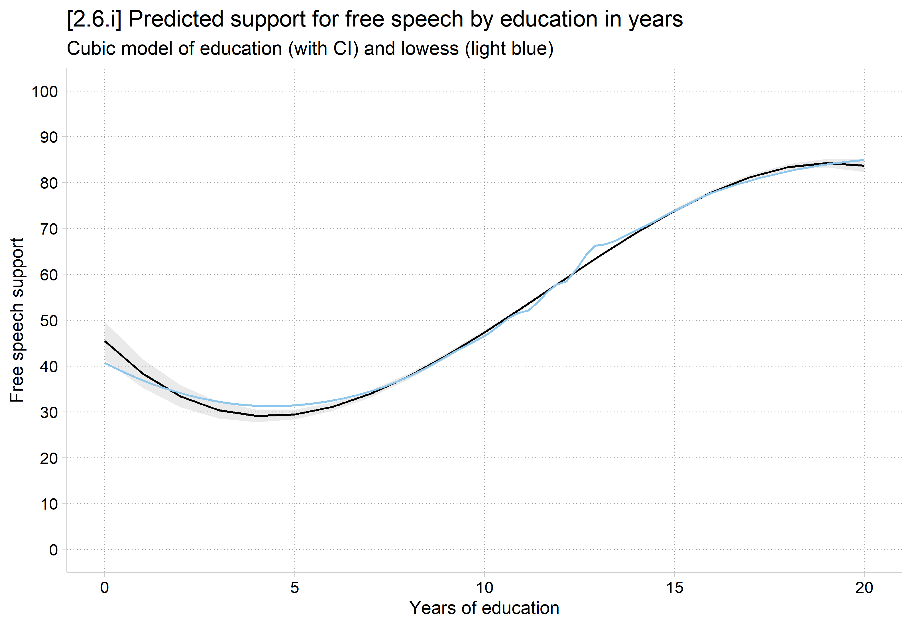
Splines
An alternative to polynomial IVs is splines which allow for an abrupt change in the prediction line
Essentially, estimate a coefficient for each piece of the relationship separately allowing entirely different slopes
binscatter PHscale age, ///title("[2.6.k] Binned scatterplot for physical health by age") ///ytitle("Physical health scale") line(none)
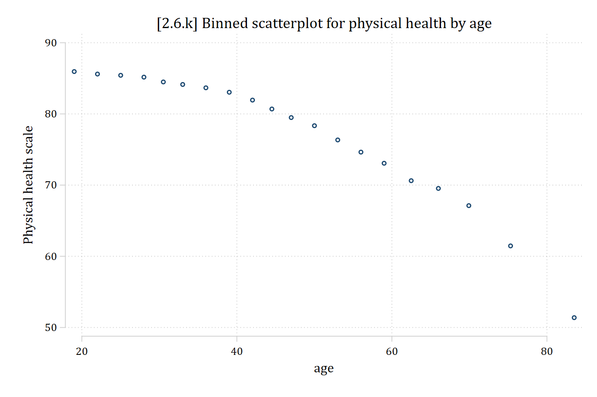
# 20 bins of age with equal numbers of observations; the mean of age and of# physical health in each binhilda_bins <- hilda |>mutate(agebin =ntile(age, 20)) |>group_by(agebin) |>summarize(age =mean(age), PHscale =mean(PHscale))ggplot(hilda_bins, aes(x = age, y = PHscale)) +geom_point() +labs(title ="[2.6.k] Binned scatterplot for physical health by age",y ="Physical health scale")
binscatterhist PHscale age, line(qfit) ///title("[2.6.l] Binned scatterplot for physical health by age") ///subtitle("Including a quadratic line fit") ///ytitle("Physical health scale")
(242,933 real changes made)
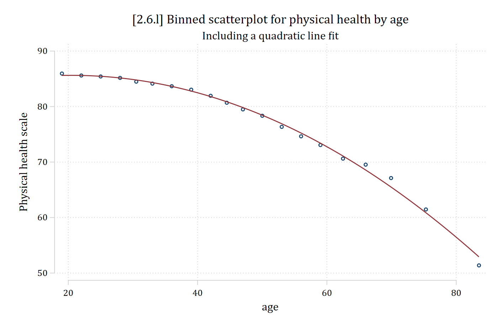
# Quadratic fit to all observations, drawn over the binned meansggplot(hilda_bins, aes(x = age, y = PHscale)) +geom_point() +geom_smooth(data = hilda, method ="lm", formula = y ~poly(x, 2), se =FALSE) +coord_cartesian(xlim =range(hilda_bins$age)) +labs(title ="[2.6.l] Binned scatterplot for physical health by age",subtitle ="Including a quadratic line fit",y ="Physical health scale")
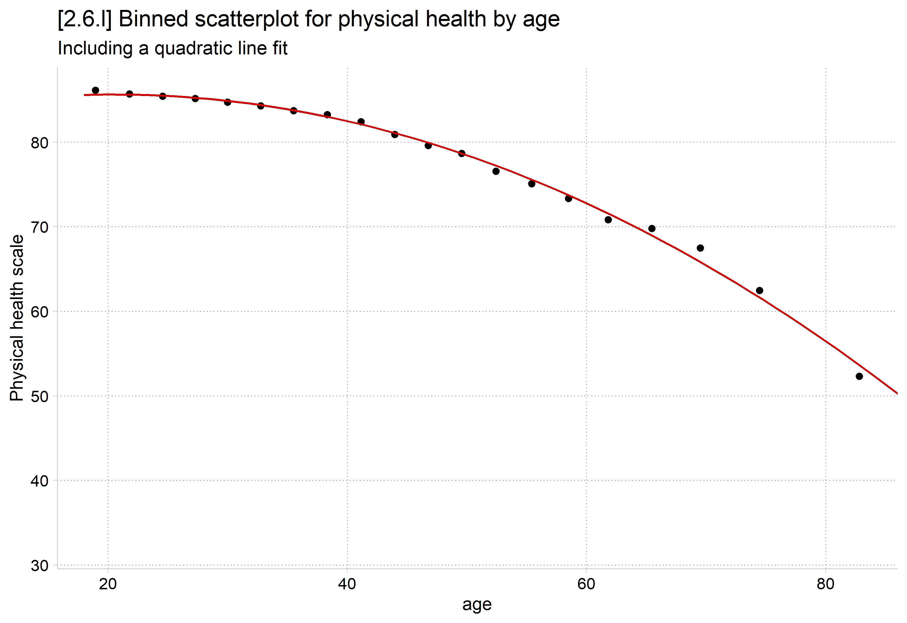
Treating a continuous or ordinal IV as nominal
A limitation of the methods covered above is they only examine bivariate relationships*; often, we want to know conditional relationships after controlling for other variables
Also limited to relatively simple regressions; e.g., cannot examine multilevel or fixed effect models
An elegantly simple but remarkably flexible way to examine the functional form of a continuous IV is to treat it as a nominal variable in your regression model
E.g., Omit 0 as reference category for social roles; add coefficients for 1, 2, 3, 4…8 roles
For IVs with lots of values, you can “coarsen” or “bin” them first
E.g., Create age categories of 20 – 30, 31 – 40, 41 – 50, etc.
Can use this technique for almost any regression model and almost any DV type
For this technique, you want to go straight to graphs rather than worrying about the coefficient estimates
*Can use lowess with control variables with the mlowess command but it is limited
qui margins, at(roles=(0(1)8)) saving(m_cat, replace)marginsplot, ///title("[2.6.m] Predictions from Categorical Form of Social Roles", size(medium)) ///ytitle("Mental Health Scale") xtitle("Number of Social Roles")
Variables that uniquely identify margins: roles
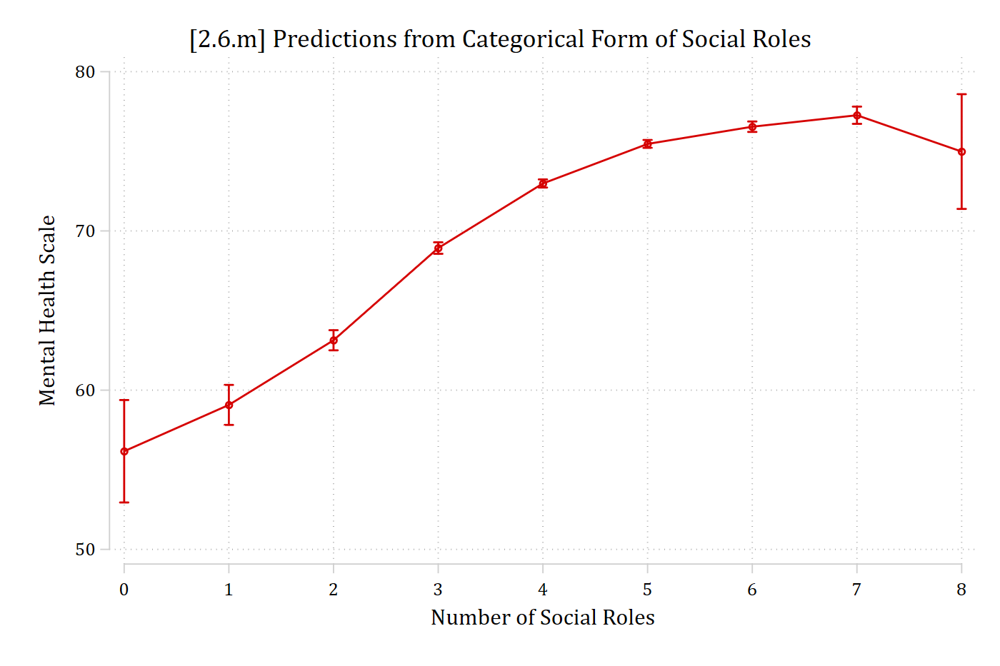
# Treat binary/nominal variables as factorshilda <- hilda |>mutate(male =as_factor(male), educ =as_factor(educ), wave =factor(wave))rolesmod <-lm(MHscale ~as_factor(roles) + male + hhincome + age + educ + wave, data = hilda)# Predictions with the other variables at their means (modes for factors);# vcov = ~ID for standard errors clustered by personplot_predictions(rolesmod, by ="roles", newdata =datagrid(roles =0:8),vcov =~ID) +labs(title ="[2.6.m] Predictions from Categorical Form of Social Roles",x ="Number of Social Roles", y ="Mental Health Scale")
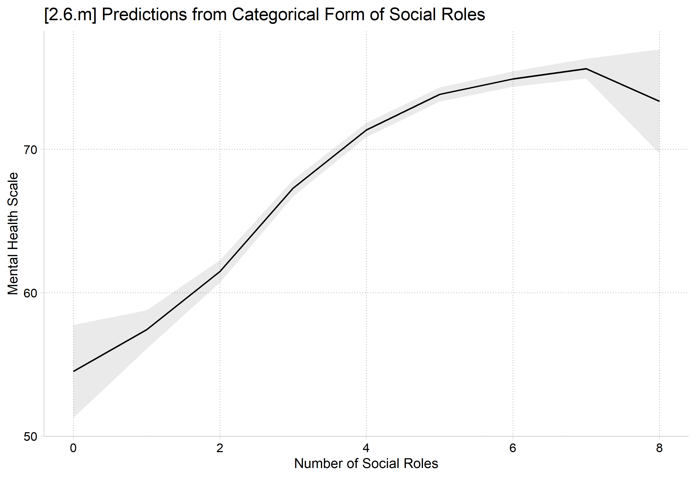
Note, despite this pattern, there is no monotonic restriction on the functional form
qui margins, at(roles=(0(.25)8))marginsplot, plotopt(lcol(eltblue) msym(none)) /// recastci(rline) ciopts(lpat(dash) col(eltblue*.5)) ///title("[2.6.n] Predictions from Quadratic Form of Social Roles", size(medium)) ///ytitle("Mental Health Scale") xtitle("Number of Social Roles")
Variables that uniquely identify margins: roles
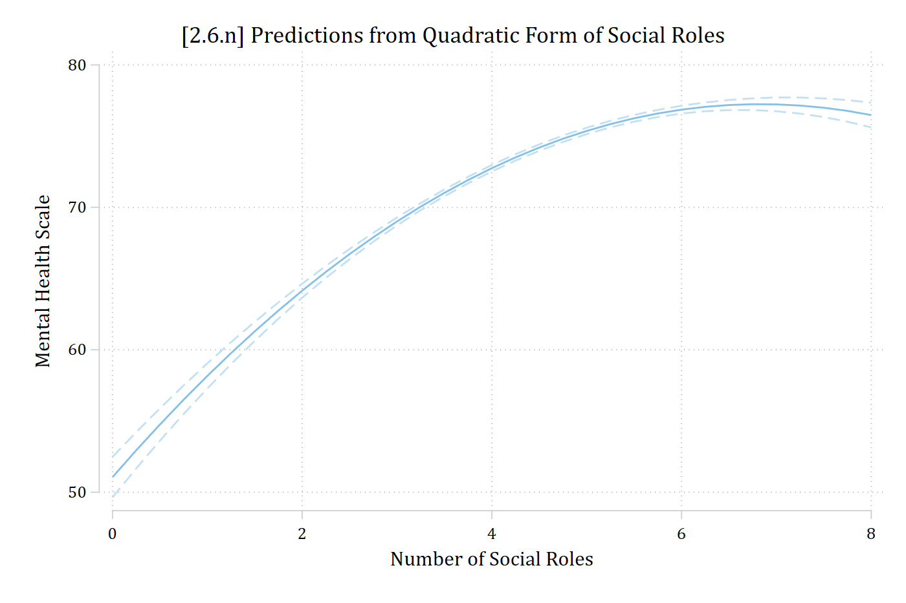
roles2mod <-lm(MHscale ~poly(roles, 2, raw =TRUE) + male + hhincome + age + educ + wave, data = hilda)plot_predictions(roles2mod, by ="roles", newdata =datagrid(roles =seq(0, 8, .25)),vcov =~ID) +labs(title ="[2.6.n] Predictions from Quadratic Form of Social Roles",x ="Number of Social Roles", y ="Mental Health Scale")
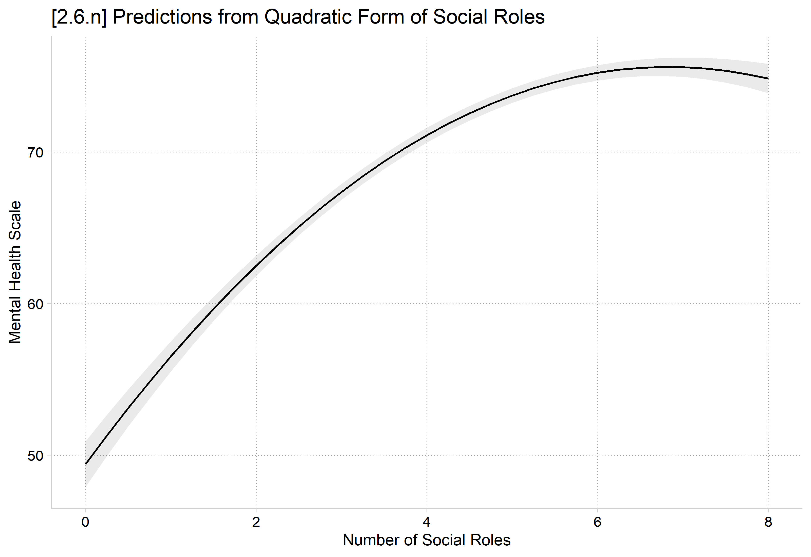
*Note: The addition of the polynomial roles2 allows for a change in the slope
qui margins, at(roles=(0(1)8)) saving(m_sq, replace)combomarginsplot m_cat m_sq, /// labels("Categorical Model""Quadratic Model") ///title("[2.6.o] Comparison of Predictions for Various Functional Forms of Roles", size(medium)) ///ytitle("Mental Health Scale") xtitle("Number of Social Roles")
Variables that uniquely identify margins: roles _filenumber
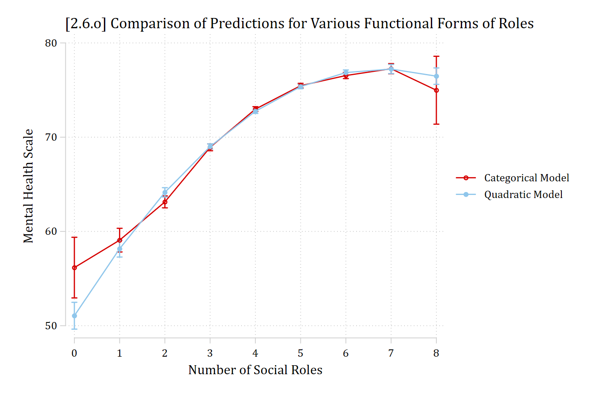
cat_prs <-predictions(rolesmod, newdata =datagrid(roles =0:8), vcov =~ID)sq_prs <-predictions(roles2mod, newdata =datagrid(roles =0:8), vcov =~ID)roles_prs <-bind_rows("Categorical Model"= cat_prs, "Quadratic Model"= sq_prs,.id ="model")ggplot(roles_prs, aes(x = roles, y = estimate, ymin = conf.low, ymax = conf.high,color = model)) +geom_pointrange(position =position_dodge(width =0.3)) +geom_line(position =position_dodge(width =0.3)) +labs(title ="[2.6.o] Comparison of Predictions for Various Functional Forms of Roles",x ="Number of Social Roles", y ="Mental Health Scale", color =NULL)
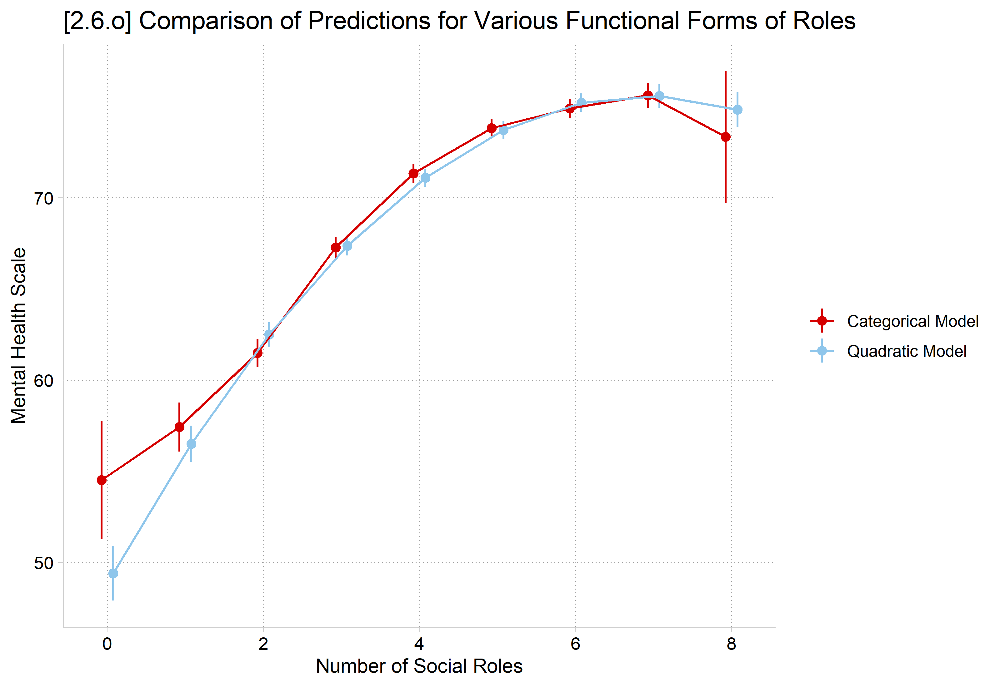
The simple addition of roles2 does a remarkably good job here
* Person meansof the role counts and their squaresbysort ID: egen orolesM = mean(oroles)bysort ID: egen oroles2M = mean(oroles^2)bysort ID: egen vrolesM = mean(vroles)bysort ID: egen vroles2M = mean(vroles^2)xtreg MHscale i.ageC /// c.oroles##c.oroles c.vroles##c.vroles /// c.orolesM c.oroles2M c.vrolesM c.vroles2M /// physfunc ib3.educ c.hhincome i.wave, re
marginsplot, recast(scatter) ///title("[2.6.p] Psychological well-being across ages (binned)", size(medlarge)) ///subtitle("Fixed effects model with controls") ///xtitle("Age bins in 5 year increments") ytitle("Mental health")
Variables that uniquely identify margins: ageC
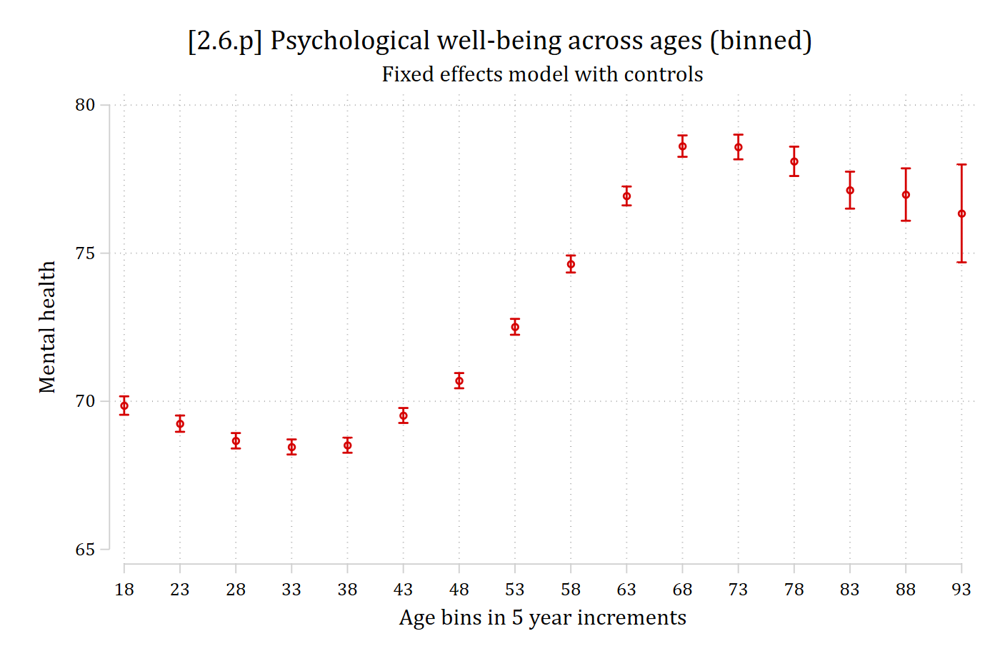
summary(hilda$age)
Min. 1st Qu. Median Mean 3rd Qu. Max.
18.00 31.00 45.00 46.57 60.00 101.00
# 5-year age bins, labeled by the youngest age in the binhilda$ageC <-18+5*floor((hilda$age -18) /5)frq(hilda, ageC)
hilda$ageC[hilda$ageC >93] <-93# Person means of the role counts and their squareshilda <- hilda |>group_by(ID) |>mutate(orolesM =mean(oroles), oroles2M =mean(oroles^2),vrolesM =mean(vroles), vroles2M =mean(vroles^2)) |>ungroup()agebinmod <-lmer(MHscale ~as_factor(ageC) +poly(oroles, 2, raw =TRUE) +poly(vroles, 2, raw =TRUE) + orolesM + oroles2M + vrolesM + vroles2M + physfunc +relevel(educ, ref =3) + hhincome + wave + (1| ID),data = hilda)# Predictions from the fixed part of the model (re.form = NA)agebin_prs <-predictions(agebinmod, newdata =datagrid(ageC = unique), re.form =NA)ggplot(agebin_prs, aes(x = ageC, y = estimate, ymin = conf.low, ymax = conf.high)) +geom_pointrange() +labs(title ="[2.6.p] Psychological well-being across ages (binned)",subtitle ="Fixed effects model with controls",x ="Age bins in 5 year increments", y ="Mental health")
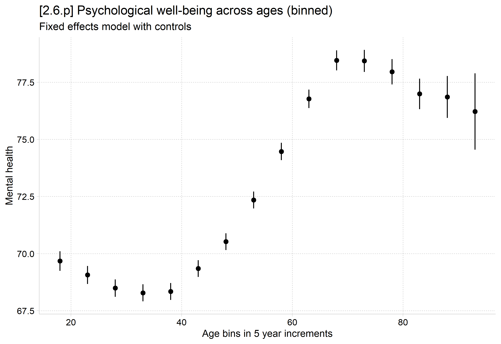
*Note: Two clear “turns” in the slope so need to add both age2 and age3 to model
qui margins, at(age=($agecats)) saving(age3_prs, replace)combomarginsplot ageC_prs age3_prs, /// labels("Categorical Model""Cubic Model") ///title("[2.6.r] Comparison of Predictions for Various Functional Forms of Age", size(medium)) ///ytitle("Mental Health Scale") legend(pos(6) row(1))
Variables that uniquely identify margins: age _filenumber
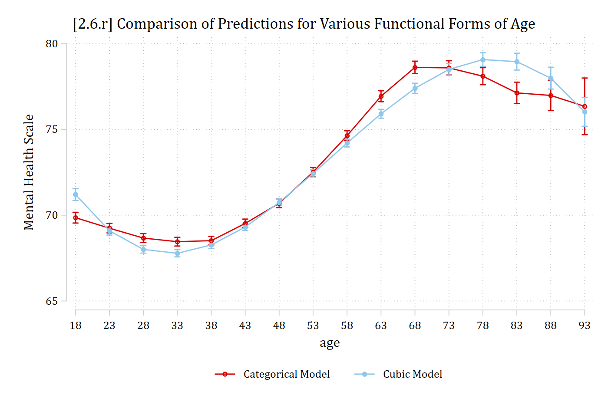
age3_prs <-predictions(age3mod, newdata =datagrid(age =seq(18, 93, 5)), re.form =NA)age_prs <-bind_rows("Categorical Model"=select(agebin_prs, age = ageC, estimate, conf.low, conf.high),"Cubic Model"=select(age3_prs, age, estimate, conf.low, conf.high),.id ="model")ggplot(age_prs, aes(x = age, y = estimate, ymin = conf.low, ymax = conf.high,color = model)) +geom_pointrange(position =position_dodge(width =1.5)) +geom_line(position =position_dodge(width =1.5)) +labs(title ="[2.6.r] Comparison of Predictions for Various Functional Forms of Age",y ="Mental Health Scale", color =NULL) +theme(legend.position ="bottom")